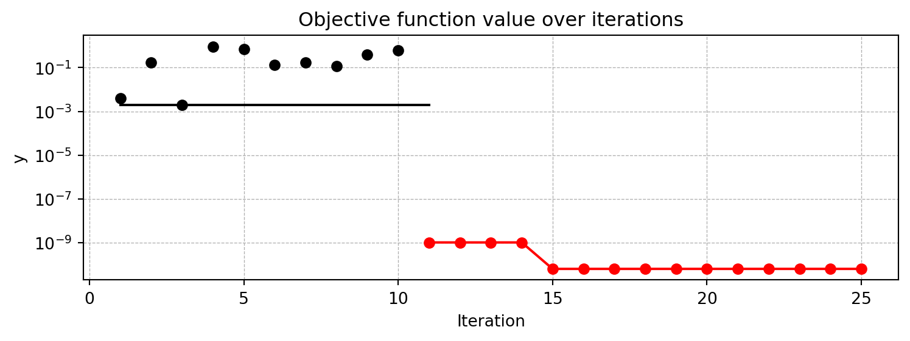
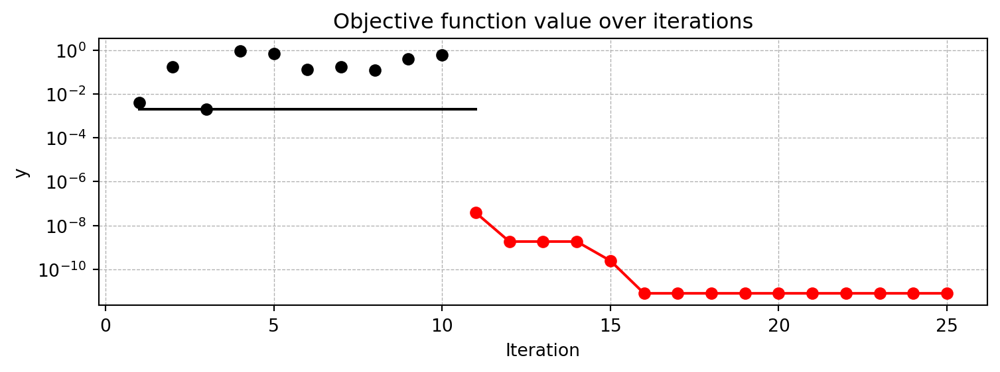
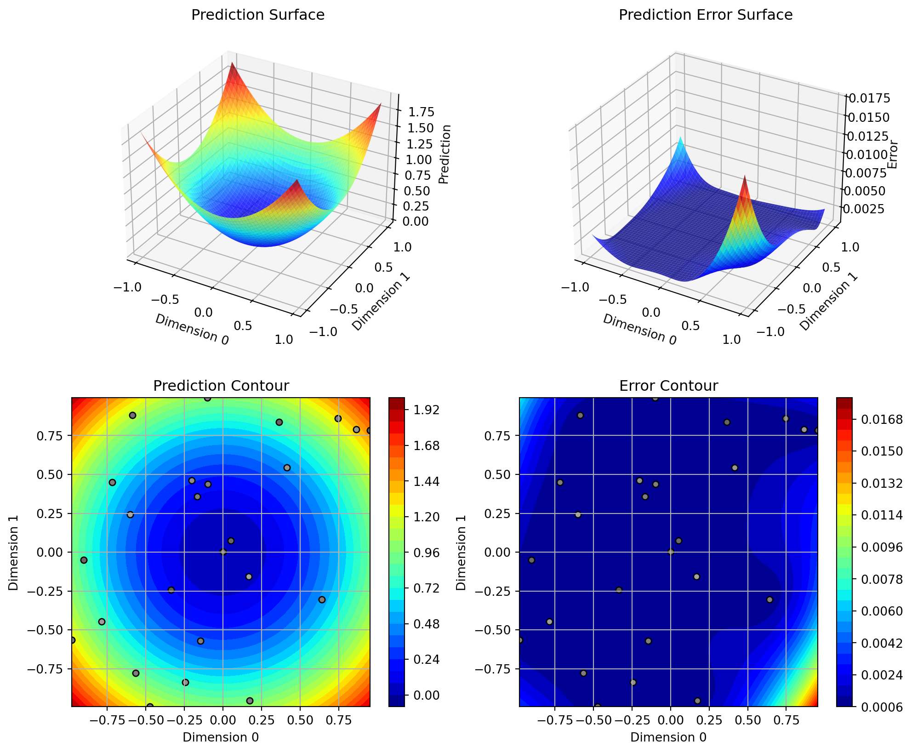
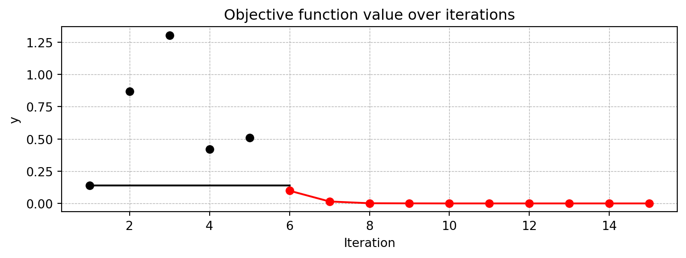
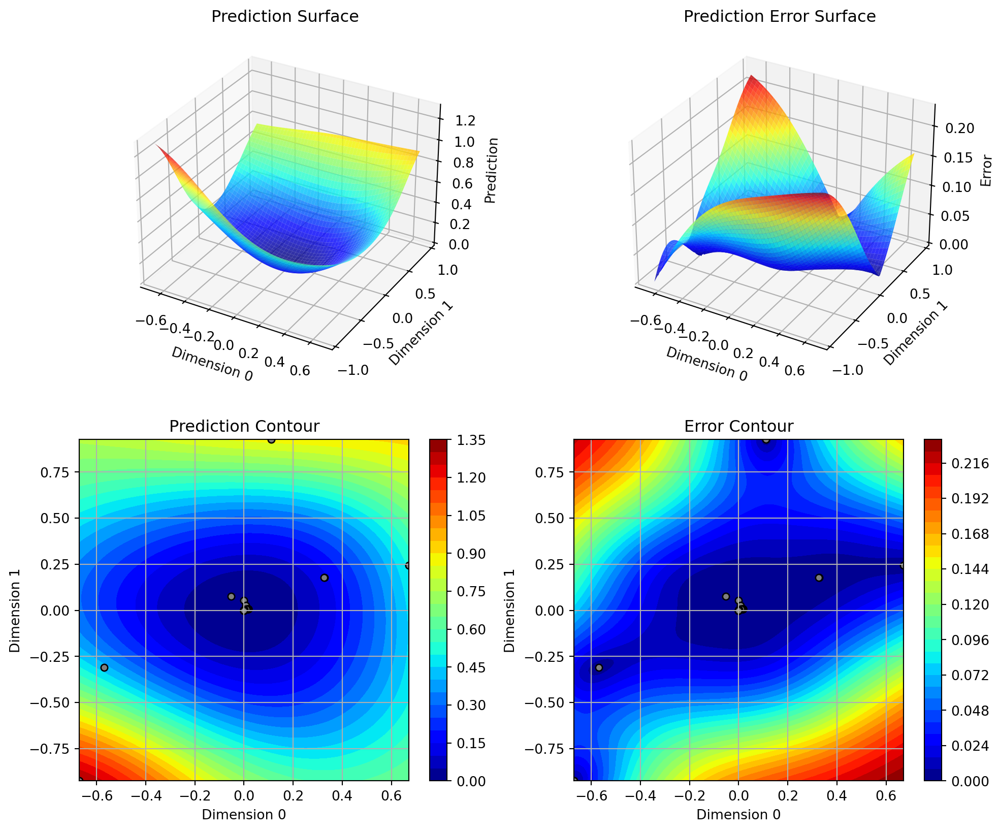
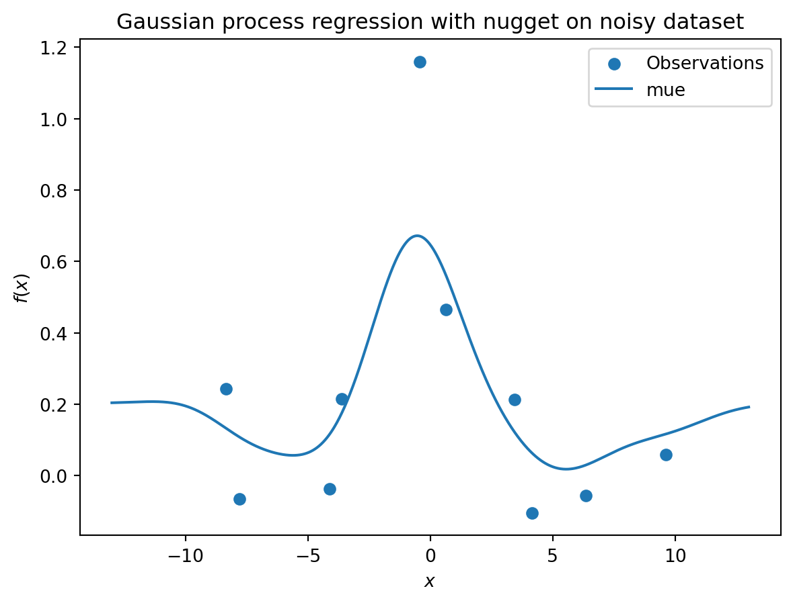
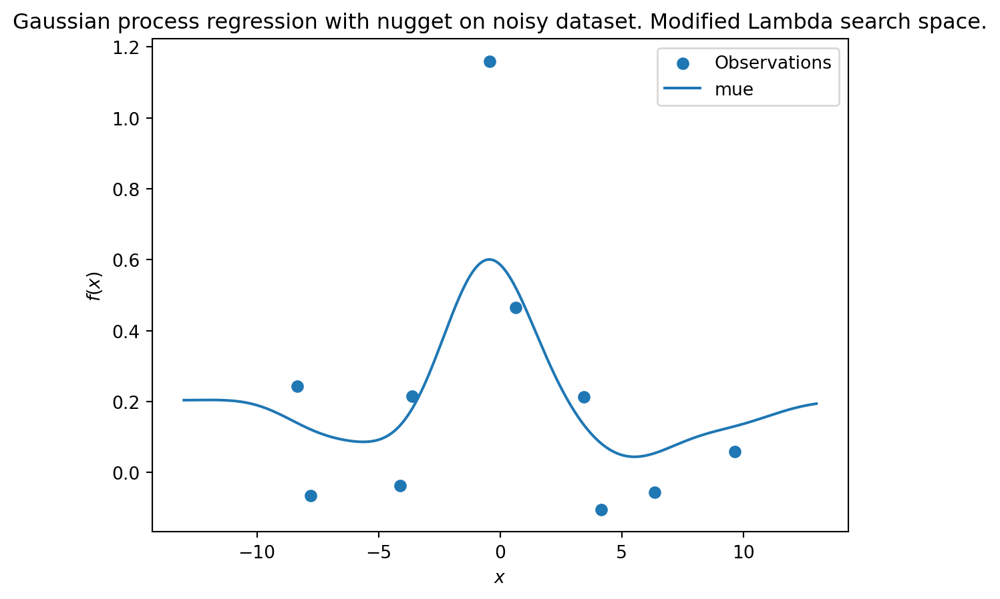

import numpy as np
from math import inf
from spotpython.fun.objectivefunctions import Analytical
from spotpython.spot import Spot
from spotpython.utils.init import fun_control_init, surrogate_control_init, design_control_init
import matplotlib.pyplot as plt18 Infill Criteria
This chapter describes, analyzes, and compares different infill criterion. An infill criterion defines how the next point \(x_{n+1}\) is selected from the surrogate model \(S\). Expected improvement is a popular infill criterion in Bayesian optimization.
18.1 Expected Improvement
Expected Improvement (EI) is one of the most influential and widely-used infill criteria in surrogate-based optimization, particularly in Bayesian optimization. An infill criterion defines how the next evaluation point \(x_{n+1}\) is selected from the surrogate model \(S\), balancing the fundamental trade-off between exploitation (sampling where the surrogate predicts good values) and exploration (sampling where the surrogate is uncertain).
The concept of Expected Improvement was formalized by Jones, Schonlau, and Welch (1998) and builds upon the theoretical foundation established by Močkus (1974). It provides an elegant mathematical framework that naturally combines both exploitation and exploration in a single criterion, making it particularly well-suited for expensive black-box optimization problems.
18.1.1 The Philosophy Behind Expected Improvement
The core idea of Expected Improvement is deceptively simple yet mathematically sophisticated. Rather than simply choosing the point where the surrogate model predicts the best value (pure exploitation) or the point with the highest uncertainty (pure exploration), EI asks a more nuanced question:
“What is the expected value of improvement over the current best observation if we evaluate the objective function at point \(x\)?”
This approach naturally balances exploitation and exploration because:
- Points near the current best solution have a reasonable chance of improvement (exploitation)
- Points in unexplored regions with high uncertainty may yield surprising improvements (exploration)
- The mathematical expectation provides a principled way to combine these considerations
18.1.2 Mathematical Definition
18.1.2.1 Setup and Notation
Consider a Gaussian Process (Kriging) surrogate model fitted to \(n\) observations \(\{(x^{(i)}, y^{(i)})\}_{i=1}^n\), where \(y^{(i)} = f(x^{(i)})\) are the expensive function evaluations. Let \(f_{best} = \min_{i=1,\ldots,n} y^{(i)}\) be the best (minimum) observed value so far.
At any unobserved point \(x\), the Gaussian Process provides:
- A predictive mean: \(\hat{f}(x) = \mu(x)\)
- A predictive standard deviation: \(s(x) = \sigma(x)\)
The GP assumes that the true function value \(f(x)\) follows a normal distribution: \[ f(x) \sim \mathcal{N}(\mu(x), \sigma^2(x)) \]
18.1.2.2 The Improvement Function
The improvement at point \(x\) is defined as: \[ I(x) = \max(f_{best} - f(x), 0) \]
This represents how much better the function value at \(x\) is compared to the current best. Note that \(I(x) = 0\) if \(f(x) \geq f_{best}\) (no improvement).
Definition 18.1 (Expected Improvement Formula) The Expected Improvement is the expectation of the improvement function: \[ EI(x) = \mathbb{E}[I(x)] = \mathbb{E}[\max(f_{best} - f(x), 0)] \]
Since \(f(x)\) is normally distributed under the GP model, this expectation has a closed-form solution:
\[ EI(x) = \begin{cases} (f_{best} - \mu(x)) \Phi\left(\frac{f_{best} - \mu(x)}{\sigma(x)}\right) + \sigma(x) \phi\left(\frac{f_{best} - \mu(x)}{\sigma(x)}\right) & \text{if } \sigma(x) > 0 \\ 0 & \text{if } \sigma(x) = 0 \end{cases} \]
where:
- \(\Phi(\cdot)\) is the cumulative distribution function (CDF) of the standard normal distribution
- \(\phi(\cdot)\) is the probability density function (PDF) of the standard normal distribution
- \(Z = \frac{f_{best} - \mu(x)}{\sigma(x)}\) is the standardized improvement
18.1.2.3 Alternative Formulation
The Expected Improvement can also be written as: \[ EI(x) = \sigma(x) \left[ Z \Phi(Z) + \phi(Z) \right] \]
where \(Z = \frac{f_{best} - \mu(x)}{\sigma(x)}\) is the standardized improvement.
18.1.3 Understanding the Components
The EI formula elegantly combines two terms:
- Exploitation Term: \((f_{best} - \mu(x)) \Phi(Z)\)
- Larger when \(\mu(x)\) is small (good predicted value)
- Weighted by the probability that \(f(x) < f_{best}\)
- Exploration Term: \(\sigma(x) \phi(Z)\)
- Larger when \(\sigma(x)\) is large (high uncertainty)
- Represents the potential for discovering unexpectedly good values
18.2 EI: Implementation in spotpython
The spotpython package implements Expected Improvement in its Kriging class. Here’s how it works in practice:
18.2.1 Key Implementation Details
Negative Expected Improvement: In optimization contexts, spotpython often returns the negative Expected Improvement because many optimization algorithms are designed to minimize rather than maximize objectives.
Logarithmic Transformation: To handle numerical issues and improve optimization stability, spotpython often works with \(\log(EI)\):
ExpImp = np.log10(EITermOne + EITermTwo + self.eps) return float(-ExpImp) # Negative for minimizationNumerical Stability: A small epsilon value (
self.eps) is added to prevent numerical issues when EI becomes very small.
18.2.2 Code Example from the Kriging Class
def _pred(self, x: np.ndarray) -> Tuple[float, float, float]:
"""Computes Kriging prediction including Expected Improvement."""
# ... [prediction calculations] ...
# Compute Expected Improvement
if self.return_ei:
yBest = np.min(y) # Current best observation
# First term: (f_best - mu) * Phi(Z)
EITermOne = (yBest - f) * (0.5 + 0.5 * erf((1 / np.sqrt(2)) * ((yBest - f) / s)))
# Second term: sigma * phi(Z)
EITermTwo = s * (1 / np.sqrt(2 * np.pi)) * np.exp(-0.5 * ((yBest - f) ** 2 / SSqr))
# Expected Improvement (in log scale)
ExpImp = np.log10(EITermOne + EITermTwo + self.eps)
return float(f), float(s), float(-ExpImp) # Return negative EI18.3 Practical Advantages of Expected Improvement
- Automatic Balance: EI naturally balances exploitation and exploration without requiring manual tuning of weights or parameters.
- Scale Invariance: EI is relatively invariant to the scale of the objective function.
- Theoretical Foundation: EI has strong theoretical justification from decision theory and information theory.
- Efficient Optimization: The smooth, differentiable nature of EI makes it suitable for gradient-based optimization of the acquisition function.
- Proven Performance: EI has been successfully applied across numerous domains and consistently performs well in practice.
18.4 Connection to the Hyperparameter Tuning Cookbook
In the context of hyperparameter tuning, Expected Improvement plays a crucial role in:
- Sequential Model-Based Optimization: EI guides the selection of which hyperparameter configurations to evaluate next
- Efficient Resource Utilization: By balancing exploration and exploitation, EI helps find good hyperparameters with fewer expensive model training runs
- Automated Optimization: EI provides a principled, automatic way to navigate the hyperparameter space without manual intervention
The implementation in spotpython makes Expected Improvement accessible for practical hyperparameter optimization tasks, providing both the theoretical rigor of Bayesian optimization and the computational efficiency needed for real-world applications.
18.5 Example: Spot and the 1-dim Sphere Function
18.5.1 The Objective Function: 1-dim Sphere
- The
spotpythonpackage provides several classes of objective functions. - We will use an analytical objective function, i.e., a function that can be described by a (closed) formula: \[f(x) = x^2 \]
fun = Analytical().fun_sphere- The size of the
lowerbound vector determines the problem dimension. - Here we will use
np.array([-1]), i.e., a one-dim function.
NoteTensorBoard
Similar to the one-dimensional case, which was introduced in Section Section 12.25, we can use TensorBoard to monitor the progress of the optimization. We will use the same code, only the prefix is different:
from spotpython.utils.init import fun_control_init
PREFIX = "07_Y"
fun_control = fun_control_init(
PREFIX=PREFIX,
fun_evals = 25,
lower = np.array([-1]),
upper = np.array([1]),
tolerance_x = np.sqrt(np.spacing(1)),)
design_control = design_control_init(init_size=10)spot_1 = Spot(
fun=fun,
fun_control=fun_control,
design_control=design_control)
spot_1.run()Anisotropic model: n_theta set to 1
Anisotropic model: n_theta set to 1
spotpython tuning: 1.0155104003206277e-09 [####------] 44.00%
Anisotropic model: n_theta set to 1
spotpython tuning: 1.0155104003206277e-09 [#####-----] 48.00%
Anisotropic model: n_theta set to 1
spotpython tuning: 1.0155104003206277e-09 [#####-----] 52.00%
Anisotropic model: n_theta set to 1
spotpython tuning: 1.0155104003206277e-09 [######----] 56.00%
Anisotropic model: n_theta set to 1
spotpython tuning: 6.271448121765632e-11 [######----] 60.00%
Anisotropic model: n_theta set to 1
spotpython tuning: 6.271448121765632e-11 [######----] 64.00%
Anisotropic model: n_theta set to 1
spotpython tuning: 6.271448121765632e-11 [#######---] 68.00%
Anisotropic model: n_theta set to 1
spotpython tuning: 6.271448121765632e-11 [#######---] 72.00%
Anisotropic model: n_theta set to 1
spotpython tuning: 6.271448121765632e-11 [########--] 76.00%
Anisotropic model: n_theta set to 1
spotpython tuning: 6.271448121765632e-11 [########--] 80.00%
Anisotropic model: n_theta set to 1
spotpython tuning: 6.271448121765632e-11 [########--] 84.00%
Anisotropic model: n_theta set to 1
spotpython tuning: 6.271448121765632e-11 [#########-] 88.00%
Anisotropic model: n_theta set to 1
spotpython tuning: 6.271448121765632e-11 [#########-] 92.00%
Anisotropic model: n_theta set to 1
spotpython tuning: 6.271448121765632e-11 [##########] 96.00%
Anisotropic model: n_theta set to 1
spotpython tuning: 6.271448121765632e-11 [##########] 100.00% Done...
Experiment saved to 07_Y_res.pkl<spotpython.spot.spot.Spot at 0x103f10050>18.5.2 Results
spot_1.print_results()min y: 6.271448121765632e-11
x0: 7.919247515872725e-06[['x0', np.float64(7.919247515872725e-06)]]spot_1.plot_progress(log_y=True)
18.6 Same, but with EI as infill_criterion
PREFIX = "07_EI_ISO"
fun_control = fun_control_init(
PREFIX=PREFIX,
lower = np.array([-1]),
upper = np.array([1]),
fun_evals = 25,
tolerance_x = np.sqrt(np.spacing(1)),
infill_criterion = "ei")spot_1_ei = Spot(fun=fun,
fun_control=fun_control)
spot_1_ei.run()Anisotropic model: n_theta set to 1
Anisotropic model: n_theta set to 1
spotpython tuning: 3.8230318885769624e-08 [####------] 44.00%
Anisotropic model: n_theta set to 1
spotpython tuning: 1.8435179493822698e-09 [#####-----] 48.00%
Anisotropic model: n_theta set to 1
spotpython tuning: 1.8435179493822698e-09 [#####-----] 52.00%
Anisotropic model: n_theta set to 1
spotpython tuning: 1.8435179493822698e-09 [######----] 56.00%
Anisotropic model: n_theta set to 1
spotpython tuning: 2.458580570018359e-10 [######----] 60.00%
Anisotropic model: n_theta set to 1
spotpython tuning: 8.018959660097801e-12 [######----] 64.00%
Anisotropic model: n_theta set to 1
spotpython tuning: 8.018959660097801e-12 [#######---] 68.00%
Anisotropic model: n_theta set to 1
spotpython tuning: 8.018959660097801e-12 [#######---] 72.00%
Anisotropic model: n_theta set to 1
spotpython tuning: 8.018959660097801e-12 [########--] 76.00%
Anisotropic model: n_theta set to 1
spotpython tuning: 8.018959660097801e-12 [########--] 80.00%
Anisotropic model: n_theta set to 1
spotpython tuning: 8.018959660097801e-12 [########--] 84.00%
Anisotropic model: n_theta set to 1
spotpython tuning: 8.018959660097801e-12 [#########-] 88.00%
Anisotropic model: n_theta set to 1
spotpython tuning: 8.018959660097801e-12 [#########-] 92.00%
Anisotropic model: n_theta set to 1
spotpython tuning: 8.018959660097801e-12 [##########] 96.00%
Anisotropic model: n_theta set to 1
spotpython tuning: 8.018959660097801e-12 [##########] 100.00% Done...
Experiment saved to 07_EI_ISO_res.pkl<spotpython.spot.spot.Spot at 0x15968df90>spot_1_ei.plot_progress(log_y=True)
spot_1_ei.print_results()min y: 8.018959660097801e-12
x0: -2.831776767349044e-06[['x0', np.float64(-2.831776767349044e-06)]]
18.7 Non-isotropic Kriging
PREFIX = "07_EI_NONISO"
fun_control = fun_control_init(
PREFIX=PREFIX,
lower = np.array([-1, -1]),
upper = np.array([1, 1]),
fun_evals = 25,
tolerance_x = np.sqrt(np.spacing(1)),
infill_criterion = "ei")
surrogate_control = surrogate_control_init(
method="interpolation",
)spot_2_ei_noniso = Spot(fun=fun,
fun_control=fun_control,
surrogate_control=surrogate_control)
spot_2_ei_noniso.run()Anisotropic model: n_theta set to 2
Anisotropic model: n_theta set to 2
spotpython tuning: 1.9501861429917854e-05 [####------] 44.00%
Anisotropic model: n_theta set to 2
spotpython tuning: 1.9501861429917854e-05 [#####-----] 48.00%
Anisotropic model: n_theta set to 2
spotpython tuning: 1.9501861429917854e-05 [#####-----] 52.00%
Anisotropic model: n_theta set to 2
spotpython tuning: 1.9501861429917854e-05 [######----] 56.00%
Anisotropic model: n_theta set to 2
spotpython tuning: 1.9501861429917854e-05 [######----] 60.00%
Anisotropic model: n_theta set to 2
spotpython tuning: 1.9501861429917854e-05 [######----] 64.00%
Anisotropic model: n_theta set to 2
spotpython tuning: 1.9501861429917854e-05 [#######---] 68.00%
Anisotropic model: n_theta set to 2
spotpython tuning: 1.9501861429917854e-05 [#######---] 72.00%
Anisotropic model: n_theta set to 2
spotpython tuning: 1.9501861429917854e-05 [########--] 76.00%
Anisotropic model: n_theta set to 2
spotpython tuning: 1.9501861429917854e-05 [########--] 80.00%
Anisotropic model: n_theta set to 2
spotpython tuning: 1.9501861429917854e-05 [########--] 84.00%
Anisotropic model: n_theta set to 2
spotpython tuning: 1.9501861429917854e-05 [#########-] 88.00%
Anisotropic model: n_theta set to 2
spotpython tuning: 1.9501861429917854e-05 [#########-] 92.00%
Anisotropic model: n_theta set to 2
spotpython tuning: 1.9501861429917854e-05 [##########] 96.00%
Anisotropic model: n_theta set to 2
spotpython tuning: 1.9501861429917854e-05 [##########] 100.00% Done...
Experiment saved to 07_EI_NONISO_res.pkl<spotpython.spot.spot.Spot at 0x15c346fd0>spot_2_ei_noniso.plot_progress(log_y=True)
spot_2_ei_noniso.print_results()min y: 1.9501861429917854e-05
x0: 0.0018421907463889615
x1: 0.004013501549001412[['x0', np.float64(0.0018421907463889615)],
['x1', np.float64(0.004013501549001412)]]spot_2_ei_noniso.surrogate.plot()

18.8 Using sklearn Surrogates
18.8.1 The spot Loop
The spot loop consists of the following steps:
- Init: Build initial design \(X\)
- Evaluate initial design on real objective \(f\): \(y = f(X)\)
- Build surrogate: \(S = S(X,y)\)
- Optimize on surrogate: \(X_0 = \text{optimize}(S)\)
- Evaluate on real objective: \(y_0 = f(X_0)\)
- Impute (Infill) new points: \(X = X \cup X_0\), \(y = y \cup y_0\).
- Got 3.
The spot loop is implemented in R as follows:

18.8.2 spot: The Initial Model
18.8.2.1 Example: Modifying the initial design size
This is the “Example: Modifying the initial design size” from Chapter 4.5.1 in [bart21i].
spot_ei = Spot(fun=fun,
fun_control=fun_control_init(
lower = np.array([-1,-1]),
upper= np.array([1,1])),
design_control = design_control_init(init_size=5))
spot_ei.run()Anisotropic model: n_theta set to 2
Anisotropic model: n_theta set to 2
spotpython tuning: 0.09869770383004722 [####------] 40.00%
Anisotropic model: n_theta set to 2
spotpython tuning: 0.015232167951337295 [#####-----] 46.67%
Anisotropic model: n_theta set to 2
spotpython tuning: 0.0015969562873357095 [#####-----] 53.33%
Anisotropic model: n_theta set to 2
spotpython tuning: 0.0005247288114468921 [######----] 60.00%
Anisotropic model: n_theta set to 2
spotpython tuning: 9.614024362664624e-06 [#######---] 66.67%
Anisotropic model: n_theta set to 2
spotpython tuning: 9.614024362664624e-06 [#######---] 73.33%
Anisotropic model: n_theta set to 2
spotpython tuning: 9.614024362664624e-06 [########--] 80.00%
Anisotropic model: n_theta set to 2
spotpython tuning: 9.614024362664624e-06 [#########-] 86.67%
Anisotropic model: n_theta set to 2
spotpython tuning: 9.614024362664624e-06 [#########-] 93.33%
Anisotropic model: n_theta set to 2
spotpython tuning: 9.614024362664624e-06 [##########] 100.00% Done...
Experiment saved to 000_res.pkl<spotpython.spot.spot.Spot at 0x15eaafed0>spot_ei.plot_progress()
np.min(spot_1.y), np.min(spot_ei.y)(np.float64(6.271448121765632e-11), np.float64(9.614024362664624e-06))18.8.3 Init: Build Initial Design
from spotpython.design.spacefilling import SpaceFilling
from spotpython.surrogate.kriging import Kriging
from spotpython.fun.objectivefunctions import Analytical
gen = SpaceFilling(2)
rng = np.random.RandomState(1)
lower = np.array([-5,-0])
upper = np.array([10,15])
fun = Analytical().fun_branin
X = gen.scipy_lhd(10, lower=lower, upper = upper)
print(X)
y = fun(X, fun_control=fun_control)
print(y)[[ 8.97647221 13.41926847]
[ 0.66946019 1.22344228]
[ 5.23614115 13.78185824]
[ 5.6149825 11.5851384 ]
[-1.72963184 1.66516096]
[-4.26945568 7.1325531 ]
[ 1.26363761 10.17935555]
[ 2.88779942 8.05508969]
[-3.39111089 4.15213772]
[ 7.30131231 5.22275244]]
[128.95676449 31.73474356 172.89678121 126.71295908 64.34349975
70.16178611 48.71407916 31.77322887 76.91788181 30.69410529]S = Kriging(name='kriging', seed=123)
S.fit(X, y)
S.plot()Anisotropic model: n_theta set to 2gen = SpaceFilling(2, seed=123)
X0 = gen.scipy_lhd(3)
gen = SpaceFilling(2, seed=345)
X1 = gen.scipy_lhd(3)
X2 = gen.scipy_lhd(3)
gen = SpaceFilling(2, seed=123)
X3 = gen.scipy_lhd(3)
X0, X1, X2, X3(array([[0.77254938, 0.31539299],
[0.59321338, 0.93854273],
[0.27469803, 0.3959685 ]]),
array([[0.78373509, 0.86811887],
[0.06692621, 0.6058029 ],
[0.41374778, 0.00525456]]),
array([[0.121357 , 0.69043832],
[0.41906219, 0.32838498],
[0.86742658, 0.52910374]]),
array([[0.77254938, 0.31539299],
[0.59321338, 0.93854273],
[0.27469803, 0.3959685 ]]))18.8.4 Evaluate
18.8.5 Build Surrogate
18.8.6 A Simple Predictor
The code below shows how to use a simple model for prediction.
Assume that only two (very costly) measurements are available:
- f(0) = 0.5
- f(2) = 2.5
We are interested in the value at \(x_0 = 1\), i.e., \(f(x_0 = 1)\), but cannot run an additional, third experiment.
from sklearn import linear_model
X = np.array([[0], [2]])
y = np.array([0.5, 2.5])
S_lm = linear_model.LinearRegression()
S_lm = S_lm.fit(X, y)
X0 = np.array([[1]])
y0 = S_lm.predict(X0)
print(y0)[1.5]- Central Idea:
- Evaluation of the surrogate model
S_lmis much cheaper (or / and much faster) than running the real-world experiment \(f\).
- Evaluation of the surrogate model
18.9 Gaussian Processes regression: basic introductory example
This example was taken from scikit-learn. After fitting our model, we see that the hyperparameters of the kernel have been optimized. Now, we will use our kernel to compute the mean prediction of the full dataset and plot the 95% confidence interval.
import numpy as np
import matplotlib.pyplot as plt
import math as m
from sklearn.gaussian_process import GaussianProcessRegressor
from sklearn.gaussian_process.kernels import RBF
X = np.linspace(start=0, stop=10, num=1_000).reshape(-1, 1)
y = np.squeeze(X * np.sin(X))
rng = np.random.RandomState(1)
training_indices = rng.choice(np.arange(y.size), size=6, replace=False)
X_train, y_train = X[training_indices], y[training_indices]
kernel = 1 * RBF(length_scale=1.0, length_scale_bounds=(1e-2, 1e2))
gaussian_process = GaussianProcessRegressor(kernel=kernel, n_restarts_optimizer=9)
gaussian_process.fit(X_train, y_train)
gaussian_process.kernel_
mean_prediction, std_prediction = gaussian_process.predict(X, return_std=True)
plt.plot(X, y, label=r"$f(x) = x \sin(x)$", linestyle="dotted")
plt.scatter(X_train, y_train, label="Observations")
plt.plot(X, mean_prediction, label="Mean prediction")
plt.fill_between(
X.ravel(),
mean_prediction - 1.96 * std_prediction,
mean_prediction + 1.96 * std_prediction,
alpha=0.5,
label=r"95% confidence interval",
)
plt.legend()
plt.xlabel("$x$")
plt.ylabel("$f(x)$")
_ = plt.title("sk-learn Version: Gaussian process regression on noise-free dataset")
from spotpython.surrogate.kriging import Kriging
import numpy as np
import matplotlib.pyplot as plt
rng = np.random.RandomState(1)
X = np.linspace(start=0, stop=10, num=1_000).reshape(-1, 1)
y = np.squeeze(X * np.sin(X))
training_indices = rng.choice(np.arange(y.size), size=6, replace=False)
X_train, y_train = X[training_indices], y[training_indices]
S = Kriging(name='kriging', seed=123, log_level=50, cod_type="norm")
S.fit(X_train, y_train)
mean_prediction, std_prediction, ei = S.predict(X, return_val="all")
std_prediction
plt.plot(X, y, label=r"$f(x) = x \sin(x)$", linestyle="dotted")
plt.scatter(X_train, y_train, label="Observations")
plt.plot(X, mean_prediction, label="Mean prediction")
plt.fill_between(
X.ravel(),
mean_prediction - 1.96 * std_prediction,
mean_prediction + 1.96 * std_prediction,
alpha=0.5,
label=r"95% confidence interval",
)
plt.legend()
plt.xlabel("$x$")
plt.ylabel("$f(x)$")
_ = plt.title("spotpython Version: Gaussian process regression on noise-free dataset")Anisotropic model: n_theta set to 1
18.10 The Surrogate: Using scikit-learn models
Default is the internal kriging surrogate.
S_0 = Kriging(name='kriging', seed=123)Models from scikit-learn can be selected, e.g., Gaussian Process:
# Needed for the sklearn surrogates:
from sklearn.gaussian_process import GaussianProcessRegressor
from sklearn.gaussian_process.kernels import RBF
from sklearn.tree import DecisionTreeRegressor
from sklearn.ensemble import RandomForestRegressor
from sklearn import linear_model
from sklearn import tree
import pandas as pdkernel = 1 * RBF(length_scale=1.0, length_scale_bounds=(1e-2, 1e2))
S_GP = GaussianProcessRegressor(kernel=kernel, n_restarts_optimizer=9)- and many more:
S_Tree = DecisionTreeRegressor(random_state=0)
S_LM = linear_model.LinearRegression()
S_Ridge = linear_model.Ridge()
S_RF = RandomForestRegressor(max_depth=2, random_state=0) - The scikit-learn GP model
S_GPis selected.
S = S_GPisinstance(S, GaussianProcessRegressor)Truefrom spotpython.fun.objectivefunctions import Analytical
fun = Analytical().fun_branin
fun_control = fun_control_init(
lower = np.array([-5,-0]),
upper = np.array([10,15]),
fun_evals = 15)
design_control = design_control_init(init_size=5)
spot_GP = Spot(fun=fun,
fun_control=fun_control,
surrogate=S,
design_control=design_control)
spot_GP.run()spotpython tuning: 24.51465459019188 [####------] 40.00%
spotpython tuning: 11.00309804905928 [#####-----] 46.67%
spotpython tuning: 11.00309804905928 [#####-----] 53.33%
spotpython tuning: 7.281531327496661 [######----] 60.00%
spotpython tuning: 7.281531327496661 [#######---] 66.67%
spotpython tuning: 7.281531327496661 [#######---] 73.33%
spotpython tuning: 2.951979854778794 [########--] 80.00%
spotpython tuning: 2.951979854778794 [#########-] 86.67%
spotpython tuning: 2.1049810988944007 [#########-] 93.33%
spotpython tuning: 1.9431600176593857 [##########] 100.00% Done...
Experiment saved to 000_res.pkl<spotpython.spot.spot.Spot at 0x15df19590>spot_GP.yarray([ 69.32459936, 152.38491454, 107.92560483, 24.51465459,
76.73500031, 86.30427428, 11.00309805, 16.11758746,
7.28153133, 21.82310106, 10.96088904, 2.95197985,
3.02910096, 2.1049811 , 1.94316002])spot_GP.plot_progress()spot_GP.print_results()min y: 1.9431600176593857
x0: 10.0
x1: 2.998557199177113[['x0', np.float64(10.0)], ['x1', np.float64(2.998557199177113)]]18.11 Additional Examples
# Needed for the sklearn surrogates:
from sklearn.gaussian_process import GaussianProcessRegressor
from sklearn.gaussian_process.kernels import RBF
from sklearn.tree import DecisionTreeRegressor
from sklearn.ensemble import RandomForestRegressor
from sklearn import linear_model
from sklearn import tree
import pandas as pdkernel = 1 * RBF(length_scale=1.0, length_scale_bounds=(1e-2, 1e2))
S_GP = GaussianProcessRegressor(kernel=kernel, n_restarts_optimizer=9)from spotpython.surrogate.kriging import Kriging
import numpy as np
import spotpython
from spotpython.fun.objectivefunctions import Analytical
from spotpython.spot import Spot
S_K = Kriging(name='kriging',
seed=123,
log_level=50,
infill_criterion = "y",
isotropic=True, # Use isotropic kernel
method="interpolation",
cod_type="norm")
fun = Analytical().fun_sphere
fun_control = fun_control_init(
lower = np.array([-1,-1]),
upper = np.array([1,1]),
fun_evals = 25)
spot_S_K = Spot(fun=fun,
fun_control=fun_control,
surrogate=S_K,
design_control=design_control,
surrogate_control=surrogate_control)
spot_S_K.run()Isotropic model: n_theta set to 1
Isotropic model: n_theta set to 1
spotpython tuning: 0.13771720249971786 [##--------] 24.00%
Isotropic model: n_theta set to 1
spotpython tuning: 0.00876578897677827 [###-------] 28.00%
Isotropic model: n_theta set to 1
spotpython tuning: 0.0028238006101211606 [###-------] 32.00%
Isotropic model: n_theta set to 1
spotpython tuning: 0.0008124662190145517 [####------] 36.00%
Isotropic model: n_theta set to 1
spotpython tuning: 0.0003668067953132122 [####------] 40.00%
Isotropic model: n_theta set to 1
spotpython tuning: 0.0003609163700095117 [####------] 44.00%
Isotropic model: n_theta set to 1
spotpython tuning: 0.0003600551287285679 [#####-----] 48.00%
Isotropic model: n_theta set to 1
spotpython tuning: 0.00032673438993794296 [#####-----] 52.00%
Isotropic model: n_theta set to 1
spotpython tuning: 0.0002719586679264654 [######----] 56.00%
Isotropic model: n_theta set to 1
spotpython tuning: 0.00015067567906308058 [######----] 60.00%
Isotropic model: n_theta set to 1
spotpython tuning: 1.5365773998273425e-05 [######----] 64.00%
Isotropic model: n_theta set to 1
spotpython tuning: 1.7032473152168022e-06 [#######---] 68.00%
Isotropic model: n_theta set to 1
spotpython tuning: 7.689335773694703e-07 [#######---] 72.00%
Isotropic model: n_theta set to 1
spotpython tuning: 4.992651744686528e-07 [########--] 76.00%
Isotropic model: n_theta set to 1
spotpython tuning: 4.112090972832364e-07 [########--] 80.00%
Isotropic model: n_theta set to 1
spotpython tuning: 3.8284214021969466e-07 [########--] 84.00%
Isotropic model: n_theta set to 1
spotpython tuning: 3.8284214021969466e-07 [#########-] 88.00%
Isotropic model: n_theta set to 1
spotpython tuning: 3.8284214021969466e-07 [#########-] 92.00%
Isotropic model: n_theta set to 1
spotpython tuning: 3.8284214021969466e-07 [##########] 96.00%
Isotropic model: n_theta set to 1
spotpython tuning: 3.8284214021969466e-07 [##########] 100.00% Done...
Experiment saved to 000_res.pkl<spotpython.spot.spot.Spot at 0x15ea53390>spot_S_K.plot_progress(log_y=True)spot_S_K.surrogate.plot()
spot_S_K.print_results()min y: 3.8284214021969466e-07
x0: -0.0005988997612462163
x1: 0.00015543878601854735[['x0', np.float64(-0.0005988997612462163)],
['x1', np.float64(0.00015543878601854735)]]18.11.1 Optimize on Surrogate
18.11.2 Evaluate on Real Objective
18.11.3 Impute / Infill new Points
18.12 Tests
import numpy as np
from spotpython.spot import Spot
from spotpython.fun.objectivefunctions import Analytical
fun_sphere = Analytical().fun_sphere
fun_control = fun_control_init(
lower=np.array([-1, -1]),
upper=np.array([1, 1]),
n_points = 2)
spot_1 = Spot(
fun=fun_sphere,
fun_control=fun_control,
)
# (S-2) Initial Design:
spot_1.X = spot_1.design.scipy_lhd(
spot_1.design_control["init_size"], lower=spot_1.lower, upper=spot_1.upper
)
print(spot_1.X)
# (S-3): Eval initial design:
spot_1.y = spot_1.fun(spot_1.X)
print(spot_1.y)
spot_1.fit_surrogate()
X0 = spot_1.suggest_new_X()
print(X0)
assert X0.size == spot_1.n_points * spot_1.k[[ 0.86352963 0.7892358 ]
[-0.24407197 -0.83687436]
[ 0.36481882 0.8375811 ]
[ 0.415331 0.54468512]
[-0.56395091 -0.77797854]
[-0.90259409 -0.04899292]
[-0.16484832 0.35724741]
[ 0.05170659 0.07401196]
[-0.78548145 -0.44638164]
[ 0.64017497 -0.30363301]]
[1.36857656 0.75992983 0.83463487 0.46918172 0.92329124 0.8170764
0.15480068 0.00815134 0.81623768 0.502017 ]
Anisotropic model: n_theta set to 2
[[0.00053429 0.00264761]
[0.00062433 0.00295714]]18.13 EI: The Famous Schonlau Example
X_train0 = np.array([1, 2, 3, 4, 12]).reshape(-1,1)
X_train = np.linspace(start=0, stop=10, num=5).reshape(-1, 1)from spotpython.surrogate.kriging import Kriging
import numpy as np
import matplotlib.pyplot as plt
X_train = np.array([1., 2., 3., 4., 12.]).reshape(-1,1)
y_train = np.array([0., -1.75, -2, -0.5, 5.])
S = Kriging(name='kriging', seed=123, log_level=50, isotropic=True, method="interpolation", cod_type="norm")
S.fit(X_train, y_train)
X = np.linspace(start=0, stop=13, num=1000).reshape(-1, 1)
mean_prediction, std_prediction, ei = S.predict(X, return_val="all")
plt.scatter(X_train, y_train, label="Observations")
plt.plot(X, mean_prediction, label="Mean prediction")
if True:
plt.fill_between(
X.ravel(),
mean_prediction - 2 * std_prediction,
mean_prediction + 2 * std_prediction,
alpha=0.5,
label=r"95% confidence interval",
)
plt.legend()
plt.xlabel("$x$")
plt.ylabel("$f(x)$")
_ = plt.title("Gaussian process regression on noise-free dataset")Isotropic model: n_theta set to 1
#plt.plot(X, y, label=r"$f(x) = x \sin(x)$", linestyle="dotted")
# plt.scatter(X_train, y_train, label="Observations")
plt.plot(X, -ei, label="Expected Improvement")
plt.legend()
plt.xlabel("$x$")
plt.ylabel("$f(x)$")
_ = plt.title("Gaussian process regression on noise-free dataset")
S.get_model_params(){'log_theta_lambda': array([-0.99002521]),
'U': array([[1.00000001e+00, 0.00000000e+00, 0.00000000e+00, 0.00000000e+00,
0.00000000e+00],
[9.02737589e-01, 4.30191655e-01, 0.00000000e+00, 0.00000000e+00,
0.00000000e+00],
[6.64119321e-01, 7.04830318e-01, 2.49318603e-01, 0.00000000e+00,
0.00000000e+00],
[3.98156457e-01, 7.08262287e-01, 5.57958633e-01, 1.68873168e-01,
0.00000000e+00],
[4.19705904e-06, 7.48474846e-05, 7.85848111e-04, 5.55937715e-03,
9.99984242e-01]]),
'X': array([[ 1.],
[ 2.],
[ 3.],
[ 4.],
[12.]]),
'y': array([ 0. , -1.75, -2. , -0.5 , 5. ]),
'negLnLike': np.float64(1.207882047732988)}18.14 EI: The Forrester Example
from spotpython.surrogate.kriging import Kriging
import numpy as np
import matplotlib.pyplot as plt
import spotpython
from spotpython.fun.objectivefunctions import Analytical
from spotpython.spot import Spot
# exact x locations are unknown:
X_train = np.array([0.0, 0.175, 0.225, 0.3, 0.35, 0.375, 0.5,1]).reshape(-1,1)
fun = Analytical().fun_forrester
fun_control = fun_control_init(
PREFIX="07_EI_FORRESTER",
sigma=1.0,
seed=123,)
y_train = fun(X_train, fun_control=fun_control)
S = Kriging(name='kriging', seed=123, log_level=50, isotropic=True, method="interpolation", cod_type="norm")
S.fit(X_train, y_train)
X = np.linspace(start=0, stop=1, num=1000).reshape(-1, 1)
mean_prediction, std_prediction, ei = S.predict(X, return_val="all")
plt.scatter(X_train, y_train, label="Observations")
plt.plot(X, mean_prediction, label="Mean prediction")
if True:
plt.fill_between(
X.ravel(),
mean_prediction - 2 * std_prediction,
mean_prediction + 2 * std_prediction,
alpha=0.5,
label=r"95% confidence interval",
)
plt.legend()
plt.xlabel("$x$")
plt.ylabel("$f(x)$")
_ = plt.title("Gaussian process regression on noise-free dataset")Isotropic model: n_theta set to 1
#plt.plot(X, y, label=r"$f(x) = x \sin(x)$", linestyle="dotted")
# plt.scatter(X_train, y_train, label="Observations")
plt.plot(X, -ei, label="Expected Improvement")
plt.legend()
plt.xlabel("$x$")
plt.ylabel("$f(x)$")
_ = plt.title("Gaussian process regression on noise-free dataset")
18.15 Noise
import numpy as np
import spotpython
from spotpython.fun.objectivefunctions import Analytical
from spotpython.spot import Spot
from spotpython.design.spacefilling import SpaceFilling
from spotpython.surrogate.kriging import Kriging
import matplotlib.pyplot as plt
gen = SpaceFilling(1)
rng = np.random.RandomState(1)
lower = np.array([-10])
upper = np.array([10])
fun = Analytical().fun_sphere
fun_control = fun_control_init(
PREFIX="07_Y",
sigma=2.0,
seed=123,)
X = gen.scipy_lhd(10, lower=lower, upper = upper)
print(X)
y = fun(X, fun_control=fun_control)
print(y)
y.shape
X_train = X.reshape(-1,1)
y_train = y
S = Kriging(name='kriging',
seed=123,
log_level=50,
isotropic=True,
method="interpolation")
S.fit(X_train, y_train)
X_axis = np.linspace(start=-13, stop=13, num=1000).reshape(-1, 1)
mean_prediction, std_prediction, ei = S.predict(X_axis, return_val="all")
#plt.plot(X, y, label=r"$f(x) = x \sin(x)$", linestyle="dotted")
plt.scatter(X_train, y_train, label="Observations")
#plt.plot(X, ei, label="Expected Improvement")
plt.plot(X_axis, mean_prediction, label="mue")
plt.legend()
plt.xlabel("$x$")
plt.ylabel("$f(x)$")
_ = plt.title("Sphere: Gaussian process regression on noisy dataset")[[ 0.63529627]
[-4.10764204]
[-0.44071975]
[ 9.63125638]
[-8.3518118 ]
[-3.62418901]
[ 4.15331 ]
[ 3.4468512 ]
[ 6.36049088]
[-7.77978539]]
[-1.57464135 16.13714981 2.77008442 93.14904827 71.59322218 14.28895359
15.9770567 12.96468767 39.82265329 59.88028242]
Isotropic model: n_theta set to 1
S.get_model_params(){'log_theta_lambda': array([-1.10547472]),
'U': array([[ 1.00000001e+00, 0.00000000e+00, 0.00000000e+00,
0.00000000e+00, 0.00000000e+00, 0.00000000e+00,
0.00000000e+00, 0.00000000e+00, 0.00000000e+00,
0.00000000e+00],
[ 1.71273395e-01, 9.85223548e-01, 0.00000000e+00,
0.00000000e+00, 0.00000000e+00, 0.00000000e+00,
0.00000000e+00, 0.00000000e+00, 0.00000000e+00,
0.00000000e+00],
[ 9.13185641e-01, 1.94770729e-01, 3.57989333e-01,
0.00000000e+00, 0.00000000e+00, 0.00000000e+00,
0.00000000e+00, 0.00000000e+00, 0.00000000e+00,
0.00000000e+00],
[ 1.75066871e-03, -3.03962963e-04, -3.32220593e-03,
9.99992910e-01, 0.00000000e+00, 0.00000000e+00,
0.00000000e+00, 0.00000000e+00, 0.00000000e+00,
0.00000000e+00],
[ 1.77266503e-03, 2.46779726e-01, -1.18173360e-01,
-3.20689955e-04, 9.61837613e-01, 0.00000000e+00,
0.00000000e+00, 0.00000000e+00, 0.00000000e+00,
0.00000000e+00],
[ 2.40962619e-01, 9.54670167e-01, 1.27460015e-01,
2.92823173e-04, -4.96183480e-02, 1.08783189e-01,
0.00000000e+00, 0.00000000e+00, 0.00000000e+00,
0.00000000e+00],
[ 3.78787871e-01, -6.10436794e-02, -3.99469232e-01,
9.30037927e-02, -3.40797737e-02, 2.28886550e-01,
7.94366148e-01, 0.00000000e+00, 0.00000000e+00,
0.00000000e+00],
[ 5.37923899e-01, -8.19698170e-02, -4.73894981e-01,
4.72464199e-02, -3.81494475e-02, 2.47600391e-01,
6.30909853e-01, 1.27677676e-01, 0.00000000e+00,
0.00000000e+00],
[ 7.64573678e-02, -1.31037770e-02, -1.13704580e-01,
4.31578050e-01, -1.06049024e-02, 7.65591464e-02,
6.91377231e-01, -4.55944051e-01, 3.20831751e-01,
0.00000000e+00],
[ 3.87015246e-03, 3.51787171e-01, -1.60406586e-01,
-4.32751818e-04, 9.03358193e-01, -1.23536924e-01,
1.89427128e-02, 3.06145324e-02, 1.92052583e-02,
1.32355763e-01]]),
'X': array([[ 0.63529627],
[-4.10764204],
[-0.44071975],
[ 9.63125638],
[-8.3518118 ],
[-3.62418901],
[ 4.15331 ],
[ 3.4468512 ],
[ 6.36049088],
[-7.77978539]]),
'y': array([-1.57464135, 16.13714981, 2.77008442, 93.14904827, 71.59322218,
14.28895359, 15.9770567 , 12.96468767, 39.82265329, 59.88028242]),
'negLnLike': np.float64(26.185053861403645)}S = Kriging(name='kriging',
seed=123,
log_level=50,
isotropic=True,
method="regression")
S.fit(X_train, y_train)
X_axis = np.linspace(start=-13, stop=13, num=1000).reshape(-1, 1)
mean_prediction, std_prediction, ei = S.predict(X_axis, return_val="all")
#plt.plot(X, y, label=r"$f(x) = x \sin(x)$", linestyle="dotted")
plt.scatter(X_train, y_train, label="Observations")
#plt.plot(X, ei, label="Expected Improvement")
plt.plot(X_axis, mean_prediction, label="mue")
plt.legend()
plt.xlabel("$x$")
plt.ylabel("$f(x)$")
_ = plt.title("Sphere: Gaussian process regression with nugget on noisy dataset")Isotropic model: n_theta set to 1S.get_model_params(){'log_theta_lambda': array([-2.96945839, -4.36746696]),
'U': array([[ 1.00002145e+00, 0.00000000e+00, 0.00000000e+00,
0.00000000e+00, 0.00000000e+00, 0.00000000e+00,
0.00000000e+00, 0.00000000e+00, 0.00000000e+00,
0.00000000e+00],
[ 9.76133561e-01, 2.17269827e-01, 0.00000000e+00,
0.00000000e+00, 0.00000000e+00, 0.00000000e+00,
0.00000000e+00, 0.00000000e+00, 0.00000000e+00,
0.00000000e+00],
[ 9.98737180e-01, 4.96005602e-02, 1.03313371e-02,
0.00000000e+00, 0.00000000e+00, 0.00000000e+00,
0.00000000e+00, 0.00000000e+00, 0.00000000e+00,
0.00000000e+00],
[ 9.16819351e-01, -3.60194638e-01, -8.88430881e-02,
1.47823925e-01, 0.00000000e+00, 0.00000000e+00,
0.00000000e+00, 0.00000000e+00, 0.00000000e+00,
0.00000000e+00],
[ 9.16975943e-01, 3.94758936e-01, -3.27877412e-02,
3.66325637e-02, 3.07640852e-02, 0.00000000e+00,
0.00000000e+00, 0.00000000e+00, 0.00000000e+00,
0.00000000e+00],
[ 9.80702117e-01, 1.95393105e-01, 2.97956525e-03,
-1.95305648e-03, 2.02294274e-03, 8.42707084e-03,
0.00000000e+00, 0.00000000e+00, 0.00000000e+00,
0.00000000e+00],
[ 9.86788473e-01, -1.55735532e-01, -1.99486670e-02,
3.88595960e-02, 2.80720274e-03, -2.58957917e-03,
1.07358050e-02, 0.00000000e+00, 0.00000000e+00,
0.00000000e+00],
[ 9.91533829e-01, -1.25470638e-01, -1.37295308e-02,
2.92648696e-02, 2.04177274e-03, -2.17484509e-03,
6.31887751e-03, 8.18129252e-03, 0.00000000e+00,
0.00000000e+00],
[ 9.65424494e-01, -2.45321757e-01, -4.37997801e-02,
7.58574572e-02, 4.13696070e-03, -2.99247669e-03,
6.62082895e-03, 2.90074952e-03, 8.03712365e-03,
0.00000000e+00],
[ 9.26821509e-01, 3.72511391e-01, -2.67176948e-02,
3.00082411e-02, 2.43299369e-02, 1.24105236e-03,
-3.28679758e-04, -2.24048470e-04, 1.35171846e-04,
8.48934654e-03]]),
'X': array([[ 0.63529627],
[-4.10764204],
[-0.44071975],
[ 9.63125638],
[-8.3518118 ],
[-3.62418901],
[ 4.15331 ],
[ 3.4468512 ],
[ 6.36049088],
[-7.77978539]]),
'y': array([-1.57464135, 16.13714981, 2.77008442, 93.14904827, 71.59322218,
14.28895359, 15.9770567 , 12.96468767, 39.82265329, 59.88028242]),
'negLnLike': np.float64(21.820591741921213)}18.16 Cubic Function
import numpy as np
import spotpython
from spotpython.fun.objectivefunctions import Analytical
from spotpython.spot import Spot
from spotpython.design.spacefilling import SpaceFilling
from spotpython.surrogate.kriging import Kriging
import matplotlib.pyplot as plt
gen = SpaceFilling(1)
rng = np.random.RandomState(1)
lower = np.array([-10])
upper = np.array([10])
fun = Analytical().fun_cubed
fun_control = fun_control_init(
PREFIX="07_Y",
sigma=10.0,
seed=123,)
X = gen.scipy_lhd(10, lower=lower, upper = upper)
print(X)
y = fun(X, fun_control=fun_control)
print(y)
y.shape
X_train = X.reshape(-1,1)
y_train = y
S = Kriging(name='kriging', seed=123, log_level=50, isotropic=True, method="interpolation")
S.fit(X_train, y_train)
X_axis = np.linspace(start=-13, stop=13, num=1000).reshape(-1, 1)
mean_prediction, std_prediction, ei = S.predict(X_axis, return_val="all")
plt.scatter(X_train, y_train, label="Observations")
#plt.plot(X, ei, label="Expected Improvement")
plt.plot(X_axis, mean_prediction, label="mue")
plt.legend()
plt.xlabel("$x$")
plt.ylabel("$f(x)$")
_ = plt.title("Cubed: Gaussian process regression on noisy dataset")[[ 0.63529627]
[-4.10764204]
[-0.44071975]
[ 9.63125638]
[-8.3518118 ]
[-3.62418901]
[ 4.15331 ]
[ 3.4468512 ]
[ 6.36049088]
[-7.77978539]]
[ -9.63480707 -72.98497325 12.7936499 895.34567477 -573.35961837
-41.83176425 65.27989461 46.37081417 254.1530734 -474.09587355]
Isotropic model: n_theta set to 1
S = Kriging(name='kriging', seed=123, log_level=0, isotropic=True, method="regression")
S.fit(X_train, y_train)
X_axis = np.linspace(start=-13, stop=13, num=1000).reshape(-1, 1)
mean_prediction, std_prediction, ei = S.predict(X_axis, return_val="all")
plt.scatter(X_train, y_train, label="Observations")
#plt.plot(X, ei, label="Expected Improvement")
plt.plot(X_axis, mean_prediction, label="mue")
plt.legend()
plt.xlabel("$x$")
plt.ylabel("$f(x)$")
_ = plt.title("Cubed: Gaussian process with nugget regression on noisy dataset")Isotropic model: n_theta set to 1import numpy as np
import spotpython
from spotpython.fun.objectivefunctions import Analytical
from spotpython.spot import Spot
from spotpython.design.spacefilling import SpaceFilling
from spotpython.surrogate.kriging import Kriging
import matplotlib.pyplot as plt
gen = SpaceFilling(1)
rng = np.random.RandomState(1)
lower = np.array([-10])
upper = np.array([10])
fun = Analytical().fun_runge
fun_control = fun_control_init(
PREFIX="07_Y",
sigma=0.25,
seed=123,)
X = gen.scipy_lhd(10, lower=lower, upper = upper)
print(X)
y = fun(X, fun_control=fun_control)
print(y)
y.shape
X_train = X.reshape(-1,1)
y_train = y
S = Kriging(name='kriging', seed=123, log_level=50, isotropic=True, method="interpolation")
S.fit(X_train, y_train)
X_axis = np.linspace(start=-13, stop=13, num=1000).reshape(-1, 1)
mean_prediction, std_prediction, ei = S.predict(X_axis, return_val="all")
plt.scatter(X_train, y_train, label="Observations")
#plt.plot(X, ei, label="Expected Improvement")
plt.plot(X_axis, mean_prediction, label="mue")
plt.legend()
plt.xlabel("$x$")
plt.ylabel("$f(x)$")
_ = plt.title("Gaussian process regression on noisy dataset")[[ 0.63529627]
[-4.10764204]
[-0.44071975]
[ 9.63125638]
[-8.3518118 ]
[-3.62418901]
[ 4.15331 ]
[ 3.4468512 ]
[ 6.36049088]
[-7.77978539]]
[ 0.46517267 -0.03599548 1.15933822 0.05915901 0.24419145 0.21502359
-0.10432134 0.21312309 -0.05502681 -0.06434374]
Isotropic model: n_theta set to 1S = Kriging(name='kriging',
seed=123,
log_level=50,
isotropic=True,
method="regression")
S.fit(X_train, y_train)
X_axis = np.linspace(start=-13, stop=13, num=1000).reshape(-1, 1)
mean_prediction, std_prediction, ei = S.predict(X_axis, return_val="all")
plt.scatter(X_train, y_train, label="Observations")
#plt.plot(X, ei, label="Expected Improvement")
plt.plot(X_axis, mean_prediction, label="mue")
plt.legend()
plt.xlabel("$x$")
plt.ylabel("$f(x)$")
_ = plt.title("Gaussian process regression with nugget on noisy dataset")Isotropic model: n_theta set to 1
18.17 Modifying Lambda Search Space
S = Kriging(name='kriging',
seed=123,
log_level=50,
isotropic=True,
method="regression",
min_Lambda=0.1,
max_Lambda=10)
S.fit(X_train, y_train)
print(f"Lambda: {S.Lambda}")Isotropic model: n_theta set to 1
Lambda: [0.1]X_axis = np.linspace(start=-13, stop=13, num=1000).reshape(-1, 1)
mean_prediction, std_prediction, ei = S.predict(X_axis, return_val="all")
plt.scatter(X_train, y_train, label="Observations")
#plt.plot(X, ei, label="Expected Improvement")
plt.plot(X_axis, mean_prediction, label="mue")
plt.legend()
plt.xlabel("$x$")
plt.ylabel("$f(x)$")
_ = plt.title("Gaussian process regression with nugget on noisy dataset. Modified Lambda search space.")